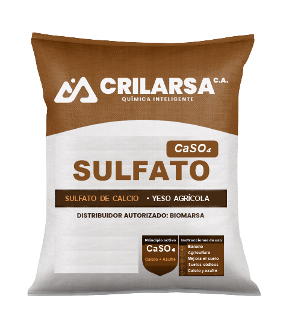

Sulfato de calcio — Yeso agrícola
Datos publicados por Crilarsa · Revisión 1 · Noviembre 2026 · No son resultados de laboratorio certificados
| Nombre químico | Sulfato de calcio |
|---|---|
| Fórmula | CaSO₄ |
| Nombre común | Yeso agrícola |
| Efecto sobre el pH | No eleva el pH del suelo |
| Aporte | Calcio y azufre |
| Presentación | Consulte presentaciones disponibles |

Usos indicados
Agricultura, incluido el cultivo de banano, en suelos y cultivos que requieren calcio y azufre.
Limitaciones técnicas
No corrige la acidez del suelo. Para suelos ácidos se usa carbonato de calcio o la mezcla 3:1.
Datos en confirmación
Contenido de CaSO₄, azufre, granulometría y peso del saco: en confirmación. Solicítelos a su asesor.
Almacenamiento y manejo
Almacenar en lugar seco y cubierto, sobre pallets. Usar mascarilla contra polvo al manipular.
Dosis
Depende del suelo, el agua o el proceso de cada cliente. Nuestro equipo técnico le orienta antes de la compra. Para otros parámetros técnicos, consúltenos.